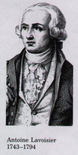
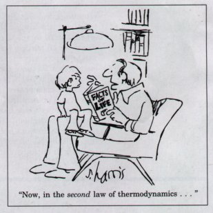
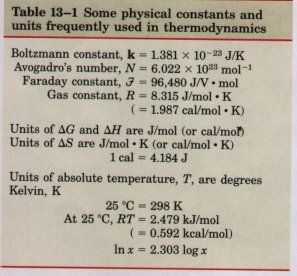
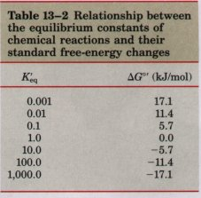
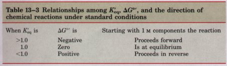
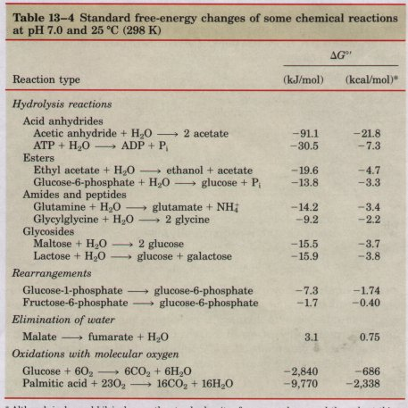

Living cells and organisms must perform work to stay alive, to grow, and to reproduce themselves. The ability to harness energy from various sources and to channel it into biological work is a fundamental property of all living organisms; it must have been acquired very early in the process of cellular evolution. Modern organisms carry out a remarkable variety of energy transductions, conversions of one form of energy to another. They use chemical energy in fuels to bring about the synthesis of complex molecules from simple precursors, producing macromolecules with highly ordered structure. They also convert the chemical energy of various fuels into concentration gradients and electrical gradients, motion, heat, and even, in a few organisms such as fireflies, light. Photosynthetic organisms transduce light energy into all of these other forms of energy.
| The chemical mechanisms that underlie biological
energy transductions have fascinated and challenged
biologists for centuries. Antoine Lavoisier, before he
lost his head in the French Revolution, recognized that
animals somehow transform chemical fuels (foods) into
heat and that this process of respiration is essential to
life. He observed that ". . . in
general, respiration is nothing but a slow combustion of
carbon and hydrogen, which is entirely similar to that
which occurs in a lighted lamp or candle, and that, from
this point of view, animals that respire are true
combustible bodies that burn and consume themselves. . .
. One may say that this analogy between combustion and
respiration has not escaped the notice of the poets, or
rather the philosophers of antiquity, and which they had
expounded and interpreted. This fire stolen from heaven,
this torch of Prometheus, does not only represent an
ingenious and poetic idea, it is a faithful picture of
the operations of nature, at least for animals that
breathe; one may therefore say, with the ancients, that
the torch of life lights itself at the moment the infant
breathes for the first time, and it does not extinguish
itself except at death."* * From a memoir by Armand Seguin and Antoine Lavoisier, dated 1789, quoted in Lavoisier, A. (1862) Oeuvres de Lavoisier, Imprimerie Imperiale, Paris. |
 |
In this century, biochemical studies have revealed much of the chemistry of energy transductions in living organisms. Biological energy transductions obey the same physical laws that govern all other natural processes. It is therefore essential for a student of biochemistry to understand these laws and the ways in which they apply to the flow of energy in the biosphere. In this chapter we first review the laws of thermodynamics and the quantitative relationships among free energy, enthalpy, and entropy. We then describe the special role of ATP in biological energy exchanges. Finally, we consider the importance of oxidation-reduction reactions in living cells, the energetics of such electron transfer reactions, and the electron carriers commonly employed as cofactors of the enzymes that catalyze these reactions.
Bioenergetics is the quantitative study of the energy transductions that occur in living cells and of the nature and function of the chemical processes underlying these transductions. Although many of the principles of thermodynamics have been introduced in earlier chapters and may be familiar to you, it is worth reviewing the quantitative aspects of these principles.
Many quantitative observations mae by physicists and chemists on the interconversion of different forms of energy led to the formulation, in the nineteenth century, of two fundamental laws of thermodynamics. The first law is the principle of the conservation of energy: in any physical or chemical change, the total amount of energy in the universe remains constant, although the form of the energy may change. The second law of thermodynamics, which can be stated in several forms, says that the universe always tends toward more and more disorder: in cell natural processes, the entropy of the unioerse increases.

Living organisms consist of collections of molecules much more highly organized than the surrounding materials from which they are constructed, and they maintain and produce order, seemingly oblivious to the second law of thermodynamics. Living organisms do not violate the second law; they operate strictly within it. To discuss the application of the second law to biological systems, we must first define those systems and the universe in which they occur. The reacting system is the collection of matter that is undergoing a particular chemical or physical process; it may be an organism, a cell, or two reacting compounds. The reacting system and its surroundings together constitute the universe. Some chemical or physical processes can be made to take place in isolated or closed systems, in which no material or energy is exchanged with the surroundings. Living cells and organisms are open systems, which exchange both material and energy with their surroundings; living systems are never at equilibrium with their surroundings.We have defined earlier in this text three thermodynamic quantities that describe the energy changes occurring in a chemical reaction. Gibbs free energy (G) expresses the amount of energy capable of doing work during a reaction at constant temperature and pressure (p. 8). When a reaction proceeds with the release of free energy (i.e., when the system changes so as to possess less free energy), the free-energy change, ΔG, has a negative sign and the reaction is said to be exergonic. In endergonic reactions, the system gains free energy and ΔG is positive. Enthalpy, H, is the heat content of the reacting system. It reflects the number and kinds of chemical bonds in the reactants and products. When a chemical reaction releases heat, it is said to be exothermic; the heat content of the products is less than that of the reactants and ΔH has a negative value. Reacting systems that take up heat from their surroundings are endothermic and have positive values of ΔH (p. 66). Entropy, S, is a quantitative expression for the randomness or disorder in a system (Box 13-1). When the products of a reaction are less complex an

d more disordered than the reactants, the reaction is said to proceed with a gain in entropy (p. 72). The units of ΔG and ΔH are joules/mole or calories/mole (recall that 1 cal equals 4.18 J); units of entropy are joules/mole•degree Kelvin (J/mol•K) (Table 13-1).Under the conditions existing in biological systems (at constant temperature and pressure), changes in free energy, enthalpy, and entropy are related to each other quantitatively by the equation
ΔG = ΔH - TΔS ...................(13-1)
in which ΔG is the change in Gibbs free energy of the reacting system, ΔH is the change in enthalpy of the system, T is the absolute temperature, and ΔS is the change in entropy of the reacting system. By convention ΔS has a positive sign when entropy increases and ΔH has a negative sign when heat is released by the system to its surroundings. Either of these conditions, which are typical of favorable processes, will tend to make ΔG negative. In fact, ΔG of a spontaneously reacting system is always negative.
The second law of thermodynamics states that the entropy of the universe increases during all chemical and physical processes, but it does not require that the entropy increase take place in the reacting system itself. The order produced within cells as they grow and divide is more than compensated for by the disorder they create in their surroundings in the course of growth and division (Box 13-1, case 2). In short, living organisms preserve their internal order by taking from the surroundings free energy in the form of nutrients or sunlight, 2and returning to their surroundings an equal amount of energy as heat and entropy.
Cells are isothermal systems-they function at essentially constant temperature (and at constant pressure). Heat flow is not a source of energy for cells because heat can do work only as it passes from a zone or object at one temperature to a zone or object at a lower temperature. The energy that cells can and must use is free energy, described by the Gibbs free-energy function G, which allows prediction of the direction of chemical reactions, their exact equilibrium position, and the amount of work they can in theory perform at constant temperature and pressure. Heterotrophic cells acquire free energy from nutrient molecules, and photosynthetic cells acquire it from absorbed solar radiation. Both kinds of cells transform this free energy into ATP and other energyrich compounds, capable of providing energy for biological work at constant temperature.
The composition of a reacting system (a mixture of chemical
reactants and products) will tend to continue changing until
equilibrium is reached. At the equilibrium concentration of
reactants and products, the rates of the forward and reverse
reactions are exactly equal and no further net change occurs in
the system. The concentrations of reactants and products at
equilibrium define the equilibrium constant (p. 90). In the
general reaction aA + bB  cC + dD, where a, b, c, and d are the
number of molecules of A, B, C, and D participating, the
equilibrium constant is given by
cC + dD, where a, b, c, and d are the
number of molecules of A, B, C, and D participating, the
equilibrium constant is given by
| Keq = | [C]c[D]d |
........................(13-2) |
| [A]a[B]b |
where [A], [B], [C], and [D] are the molar concentrations of the reaction components at the point of equilibrium. When a reacting system is not at equilibrium, the tendency to move toward equilibrium represents a driving force, the magnitude of which can be expressed as the free-energy change for the reaction, ΔG. Under standard conditions (298 K (25 °C)), when reactants and products are initially present at 1 M concentrations or, for gases, at partial pressures of 101.3 kPa (1 atm), the force driving the system toward equilibrium is defined as the standard free-energy change, ΔG° By this definition, the standard state for reactions that involve hydrogen ions is [H+] = 1 M, or pH is 0. Most biochemical reactions occur in wellbuffered aqueous solutions near pH 7; both the pH and the concentration of water (55.5 M) are essentially constant. For convenience of calculations, biochemists therefore define a slightly different standard state, in which the concentration of H+ is 10-7M (pH is 7) and that of water is 55.5 M. Physical constants based on this biochemical standard state are written with a prime (e.g., ΔG°' and K'eq) to distinguish them from the constants used by chemists and physicists. Under this convention, when H2O or H+ are reactants or products, their concentrations are not included in equations such as Equation 13-2, but are instead incorporated into the constants ΔG°' and K'eq .
Just as K'eq is a physical constant characteristic for each reaction, so too is ΔG°' a constant. As we noted in Chapter 8 (p. 204), there is a simple relationship between K'eq and ΔG°':
ΔG°' = -RT ln K'eq
The standard free-energy change of a chemical reaction is simply an alternatiue mathematical way of expressing its equilibrium constant. Table 13-2 shows the relationship between ΔG°' and K'eq. If the equilibrium constant for a given chemical reaction is 1.0, the standard freeenergy change of that reaction is 0.0 (the natural logarithm of 1.0 is zero ). If K'eq of a reaction is greater than 1.0, its ΔG°' is negative. If K'eq is less than 1.0, ΔG°' is positive. Because the relationship between ΔG°' and K'eq is exponential, relatively small changes in ΔG°' correspond to large changes in K'eq.

It may be helpful to think of the standard free-energy change in another way. ΔG°' is the difference between the free-energy content of the products and the free-energy content of the reactants under standard conditions. When ΔG°' is negative, the products contain less free energy than the reactants. The reaction will therefore proceed spontaneously to form the products under standard conditions, because all chemical reactions tend to go in the direction that results in a decrease in the free energy of the system. A positive value of ΔG°' means that the products of the reaction contain more free energy than the reactants. The reaction will therefore tend to go in the reverse direction if we start with 1.0 M concentrations of all components. Table 13-3 summarizes these points.
As an example, let us make a simple calculation of the standard free-energy change of the reaction catalyzed by the enzyme phosphoglucomutase:
Glucose-1-phosphate  glucose-6-phosphate
glucose-6-phosphate
Chemical analysis shows that whether we start with, say, 20 mM glucose-1-phosphate (but no glucose-6-phosphate) in the presence of phosphoglucomutase, or with 20 mM glucose-6-phosphate, the final equilibrium mixture in either case will contain 1 mM glucose-1-phosphate and 19 mM glucose-6-phosphate at 25 °C and pH 7.0. (Remember that enzymes do not affect the point of equilibrium of a reaction; they merely hasten its attainment. ) From these data we can calculate the equilibrium constant:
| K'eq = | [glucose-6-phosphate] |
= 19 mM / 1 mM |
| [glucose-1-phosphate] |
From this value of K'eq we can alculate the standard free-energy change:
Because the standard free-energy change is negative, when the reaction starts with 1.0 M glucose-1-phosphate and 1.0 M glucose-6-phosphate, the conversion of glucose-1-phosphate into glucose-6-phosphate proceeds with a loss (release) of free energy. For the reverse reaction (the conversion of glucose-6-phosphate to glucose-1-phosphate), ΔG°' has the same magnitude but the opposite sign.
Table 13-4 gives the standard free-energy changes for several representative chemical reactions. Note that hydrolysis of simple esters, amides, peptides, and glycosides, as well as

rearrangements and eliminations, proceed with relatively small standard free-energy changes, whereas hydrolysis of acid anhydrides occurs with relatively large decreases in standard free energy. The oxidation of organic compounds to CO2 and H2O proceeds with especially large decreases in standard free energy. However, standard free-energy changes such as those in Table 13-4 tell how much free energy is available from a reaction under standard conditions. To describe the energy released under the conditions that exist within cells, an expression for the actual free-energy change is essential.* Although joules and kilo,joules are the standard units ot' energy and are used Lhroughout Lhis text, biochemists sometimes express ΔG°' values in kilocalories per mole. We have therefore included values in both kilojoules and kilocalories in this table and in Tahle 13-5. To convert kilojoules to kilocalories, divide the number of kilojoules by 4.184.
We must be careful to distinguish between two different quantities, the free-energy change, ΔG, and the standard free-energy change, ΔG°'. Each chemical reaction has a characteristic standard free-energy change, which may be positive, negative, or zero, depending on the equilibrium constant of the reaction. The standard free-energy change tells us in which direction and how far a given reaction will go to reach equilibrium when the initial concentration of each component is 1.0 M, the pH is 7.0, and the temperature is 25 °C. Thus ΔG°' is a constant: it has a characteristic, unchanging value for a given reaction. But the actual free-energy change, ΔG, of a given chemical reaction is a function of the concentrations and of the temperature actually prevailing during the reaction, which are not necessarily the standard conditions as defined above. Moreover, the ΔG of any reaction proceeding spontaneously toward its equilibrium is always negative, becomes less negative as the reaction proceeds, and is zero at the point of equilibrium, indicating that no more work can be done by the reaction.
ΔG and
ΔG°' for any reaction A + B  C + D are related by the equation
C + D are related by the equation
| 0 = ΔG°' + RT ln | [C]eq[D]eq |
| [A]eq[B]eq |
or
ΔG°' = -RT ln K'eq
the equation that, as we noted above (p. 368), relates the standard free-energy change and the equilibrium constant.
Even a reaction for which ΔG°' is positive can go in the forward direction, if ΔG is negatiue. This is possible if the term RT ln ([products]/[reactants]) in Equation 13-3 is negative and has a larger absolute value than ΔG. For example, the immediate removal of the products of a reaction can keep the ratio [products]/[reactants] well below l, giving the term RT ln ([products]/[reactants]) a large, negative value.
ΔG and ΔG°' are expressions of the maximum amount of free energy that a given reaction can theoretically deliver. This amount of energy could be realized only if there were a perfectly efficient device available to trap or harness it. Given that no such device is available, the amount of work done by the reaction at constant temperature and pressure is always less than the theoretical amount.
It is also essential to understand that some reactions that are thermodynamically favorable (i.e., for which ΔG is large and negative) nevertheless do not occur at measurable rates. For example, firewood can be converted into CO2 and H2O by combustion in a reaction that is very favorable thermodynamically. Nevertheless, firewood is stable for years, because the activation energy (see Fig. 8-4) for its combustion is higher than that provided by room temperature. If the necessary activation energy is provided (with a lighted match, for example), combustion will begin, converting the wood to the more stable products CO2 and H2O and releasing energy as heat and light.
In living cells, reactions that would be extremely slow if uncatalyzed are caused to occur, not by supplying additional heat but by lowering the activation energy with an enzyme (see Fig. 8-4). The freeenergy change ΔG for a reczction is independent of the pathway by which the reaction occurs; it depends only on the nature and concentration of the initial reactants and the final products. An enzyme provides an alternative reaction pathway with a lower activation energy, so that at room temperature a large fraction of the substrate molecules have enough thermal energy to overcome the activation barrier, and the reaction rate increases dramatically. Enzymes cannot change equilibrium constants; but they can and do increase the rate at which a reaction proceeds in the direction dictated by thermodynamics.
In the case of two sequential chemical reactions,
A  B and B C, each reaction has its own
equilibrium constant and each has its characteristic standard
free-energy change, ΔG°'1 and ΔG°'2. As the two reactions are
sequential, B cancels out and the overall reaction is A C.
Reaction A C will also have its own equilibrium constant and thus
will also have its own standard free-energy change, ΔG°'total. The
ΔG° values of sequential chemical reactions are additive. For the
overall reaction A C, ΔG°'total is the algebraic sum of the
individual standard free-energy changes, ΔG°'1 and ΔG°'2 , of the
two separate reactions: ΔG°'total = ΔG°'l + ΔG°'2 . This principle of
bioenergetics explains how a thermodynamically unfavorable
(endergonic) reaction can be driven in the forward direction by
coupling it to a highly exergonic reaction through a common
intermediate. For example, the synthesis of glucose-6-phosphate
is the first step in the utilization of glucose by many
organisms:
B and B C, each reaction has its own
equilibrium constant and each has its characteristic standard
free-energy change, ΔG°'1 and ΔG°'2. As the two reactions are
sequential, B cancels out and the overall reaction is A C.
Reaction A C will also have its own equilibrium constant and thus
will also have its own standard free-energy change, ΔG°'total. The
ΔG° values of sequential chemical reactions are additive. For the
overall reaction A C, ΔG°'total is the algebraic sum of the
individual standard free-energy changes, ΔG°'1 and ΔG°'2 , of the
two separate reactions: ΔG°'total = ΔG°'l + ΔG°'2 . This principle of
bioenergetics explains how a thermodynamically unfavorable
(endergonic) reaction can be driven in the forward direction by
coupling it to a highly exergonic reaction through a common
intermediate. For example, the synthesis of glucose-6-phosphate
is the first step in the utilization of glucose by many
organisms:
Glucose + Pi  glucose-6-phosphate + H2O . . . ΔG°' = 13.8 kJ/mol
glucose-6-phosphate + H2O . . . ΔG°' = 13.8 kJ/mol
The positive value of ΔG°' predicts that under standard conditions the reaction will tend not to proceed spontaneously in the direction written. Another cellular reaction, the hydrolysis of ATP to ADP and Pi, is very exergonic:
ATP + H2O ADP + Pi . . . ΔG°' = -30.5 kJ/mol
These two reactions share the common intermediates Pi and H2O and may be expressed as sequential reactions:
| (1) Glucose + Pi glucose-6-phosphate + H2O |
| (2) ATP + H2O ADP + Pi |
| Sum: ATP + glucose ADP + glucose-6-phosphate |
The overall standard free-energy change is obtained by adding the ΔG°' values for individual reactions:
ΔG°' = +13.8 kJ/mol + (-30.5 kJ/mol) = -16.7 kJ/mol
The overall reaction is exergonic. In this case, energy stored in the bonds of ATP is used to drive the synthesis of glucose-6-phosphate, a product whose formation from glucose and phosphate is endergonic. The pathway of glucose-6-phosphate formation by phosphate transfer from ATP is different from reactions (1) and (2) above, but the net result is the same as the sum of the two reactions. In thermodynamic calculations, all that matters is the initial and fmal states; the route between them is immaterial.
We have said that ΔG°' is a way of expressing the equilibrium constant for a reaction. For reaction (1) above,
| K'eq1= |
|
=3.9×10-3M-1 |
Notice that H2O is not included in this expression. The equilibrium constant for the hydrolysis of ATP is
| K'eq2= |
|
=2×105M-1 |
The equilibrium constant for the two coupled reactions is
| K'eq3= |
|
=K'eq1K'eq2=7.82M-1 |
By coupling ATP hydrolysis to glucose-6-phosphate synthesis, the Keq for formation of glucose-6-phosphate has been raised by a factor of about 2×105.
This strategy is employed by all living cells in the synthesis of metabolic intermediates and cellular components. Obviously, the strategy only works if compounds such as ATP are continuously available. In the following chapters we consider several of the most important cellular pathways for producing ATP.